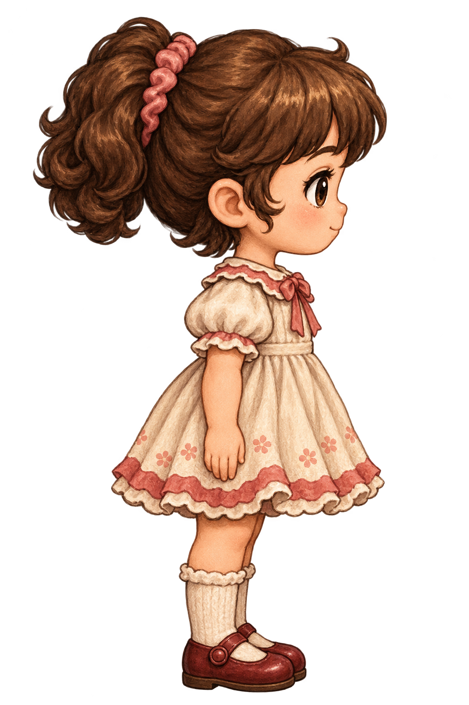
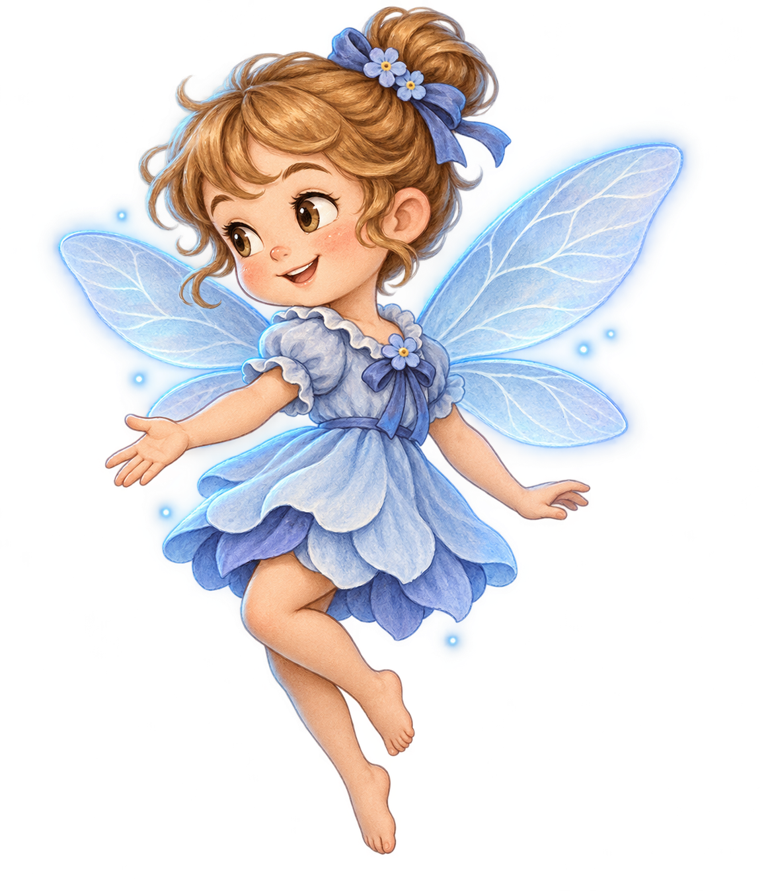

Yuna aprovada · Nanda azul em revisão
Comparação conceitual com os dois PNGs originais, sem redesenhar Yuna. A escala inicial de Nanda é uma proposta para avaliação, não uma medida confirmada do legado nem a câmera final.


O controle compara as caixas das imagens, incluindo margens e asas; não mede altura anatômica. A posição e o fundo são apenas uma montagem de revisão. O brilho é pintado na imagem: a luz real na Unity ainda não foi alterada.
Ver Nanda ampliada · Escopo da revisão